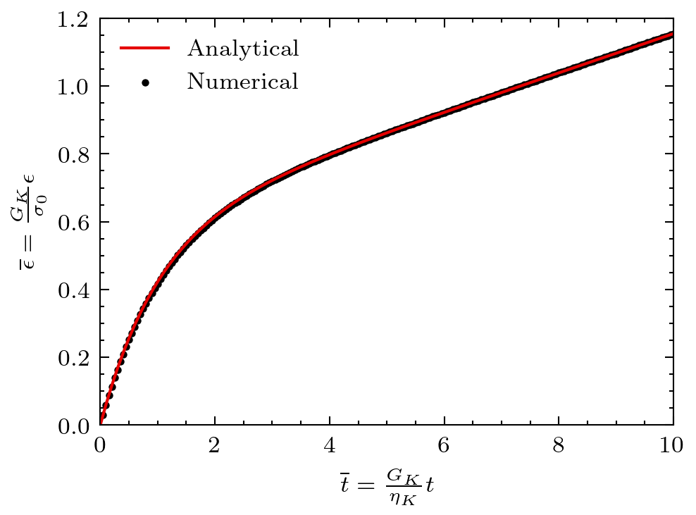

Linear Burger's viscoelastic model
This problem considers a squared medium subject to external stress leading to creep. The material deforms following a Burger's viscoelastic constitutive model.
Setup
The squared medium is subject to a compressive stress horizontally and tension stress vertically resulting in a deviatoric stress build-up. The setup is sketched in Figure 1.

Figure 1: Setup for the Burger's viscoelastic medium.
Solutions
The scalar equivalent creep strain evolution is governed by the following constitutive model:
where and are the Maxwell and Kelvin creep strain defined as:
where is the scalar equivalent creep strain rate and the scalar equivalent stress.
The strain solution is given as:
where:
With the following dimensionless quantities: and , the solution can be expressed as:
(1)
Figure 2: Creep strain evolution in a Burger's viscoelastic medium.